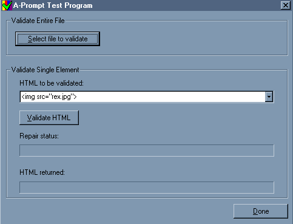
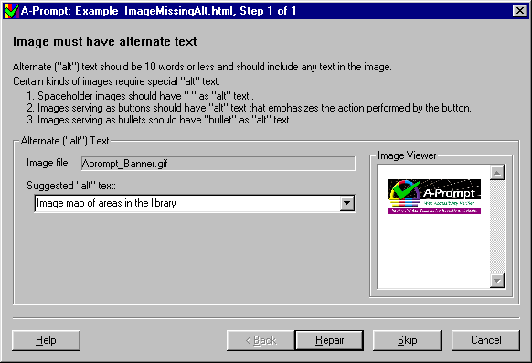

| Physics Lab Haptic Pendulum Project | A-Prompt | Music Notation |
| Accessible Interactive Learning Tools | MathML Project |
| Home : A-Prompt |
Introducing: The A-Prompt Toolkit
http://aprompt.snow.utoronto.ca/
Many of us know Internet users who have disabilities and rely on an adaptive technology system in order to access web pages. Over the last few years the situation has improved considerably in terms of the web compatibility of access technologies such as screen readers, magnifiers, and alternative mouse systems. However, the web pages themselves need to be designed with a wide range of users in mind, and authors may also include HTML access features that optimize access to users with disabilities.
One strategy for increasing the accessibility of the millions of web pages designed each year is development of tools for checking and repairing HTML. The A-Prompt (Accessibility Prompt) Toolkit is a utility currently being developed to provide this important support for web authors. This initiative has been undertaken as a joint collaboration between the Adaptive Technology Resource Centre at the University of Toronto and the Trace Centre at the University of Wisconsin.
In its current format as a standalone for PC platform, the A-Prompt allows the author to enter a single HTML element or select a file or for validation and repair. (Fig. 1)Fig 1. Screen shot of File Selection
The tool may be customized to check for different Priority Levels, based on the World Wide Web Consortium (W3C) Web Accessibility Initiative (WAI) Authoring Guidelines. If an accessibility problem is detected, A-Prompt displays the necessary dialogs and guides the user to fix the problem. Many repetitive tasks are automated, such as the addition of ALT-text or the replacement of server-side image maps with client-side image maps. (Fig. 2)
Fig. 2. Screen shot of ALT text prompt dialogue box.
When all potential problems have been resolved, the repaired HTML code is inserted into the document and a new version of the file may be saved to the author's hard drive. After a web page has been checked and repaired by A-Prompt it will be given a WAI Conformance ranking.
A beta version of A-Prompt is now available for download at the A-Prompt Web site. The next finished version will be available in January 2001. To download visit our Web site at:
http://aprompt.snow.utoronto.ca/
The A-Prompt toolkit is designed to be integrated into any HTML authoring tool. We will be making the toolkit available to all developers of HTML editors, who may choose to implement some or all of the toolkit. Alternatively, we would be pleased if they wish to simply copy our ideas and create their own implementation. It is our hope that the presence of such a system will increase general consumer awareness of access issues and help companies and academic institutions publish electronic information in accessible formats.
The Adaptive Technology Resource Centre
J.P. Robarts Library, First Floor, University of Toronto Information Commons
130 St. George St. Toronto, Ontario, Canada M5S 3H1
Telephone: (416) 978-4360 Fax: (416) 971-2629For additional information please e-mail Laurie Harrison